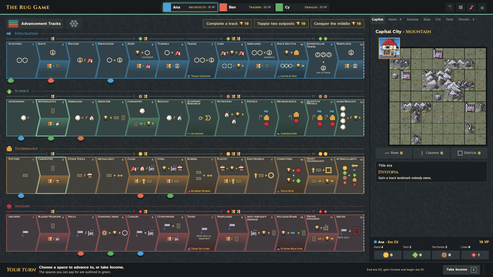
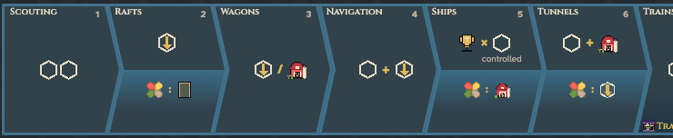
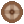
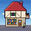

It slides along the track in 0.38 s and settles on the bottom edge of the space.

The number counts to its new value and a green +n rises from it. The header chip does the same for VP.

1It drops onto its plots with a shadow that closes as it touches the ground, in 0.3 s.

When it becomes your turn online, the tab's title says so and its icon gets a green dot, so a player in another tab sees it. The turn sound already plays.